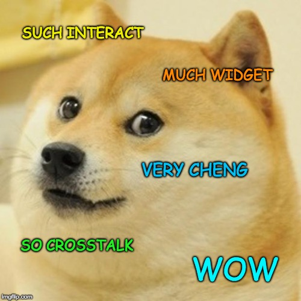
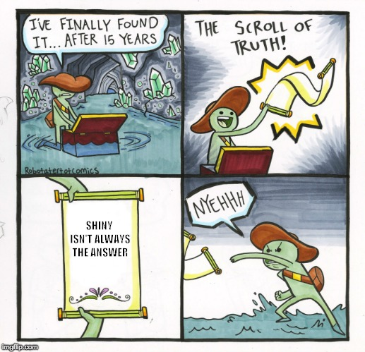
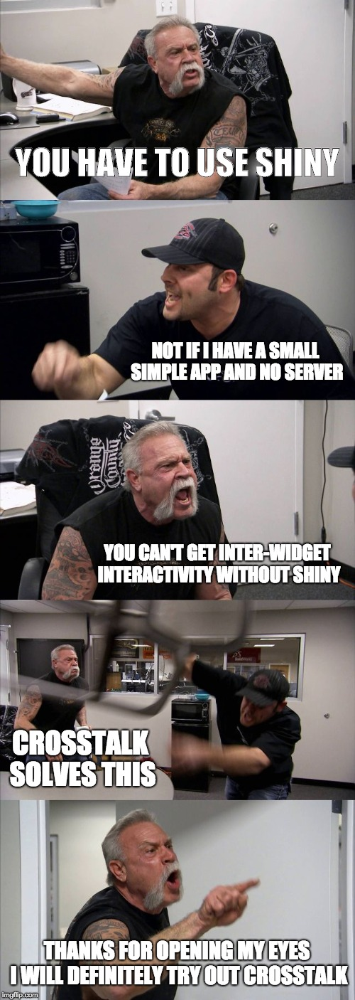
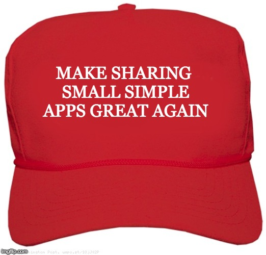
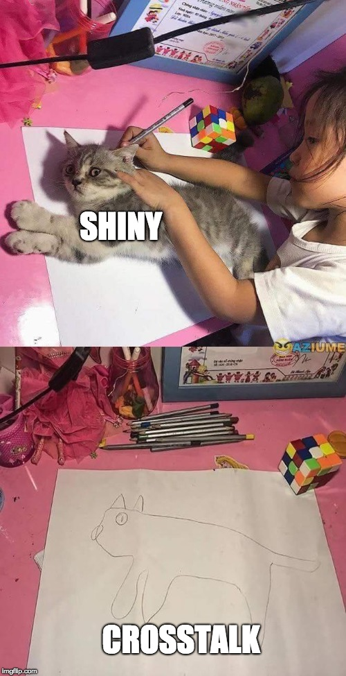
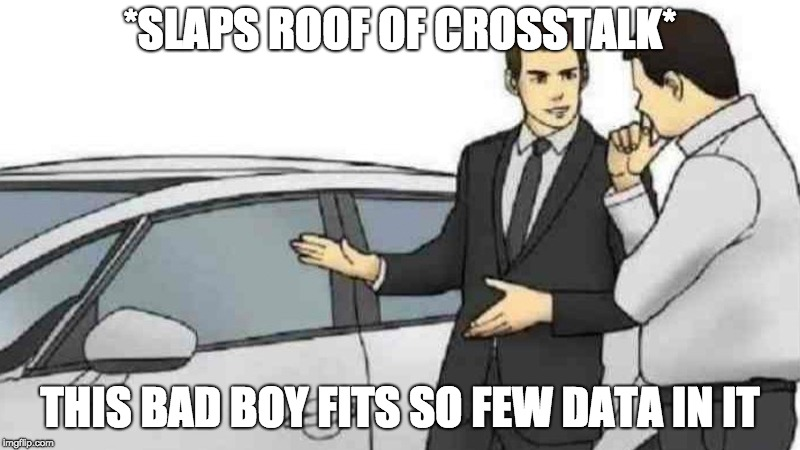
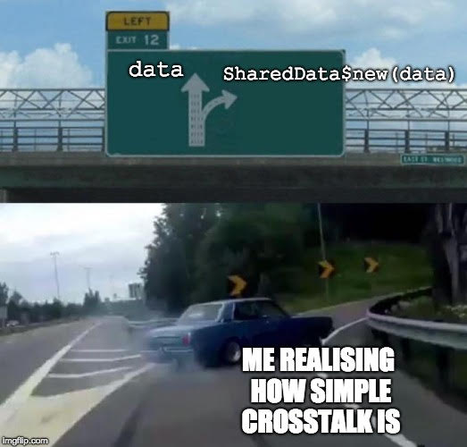
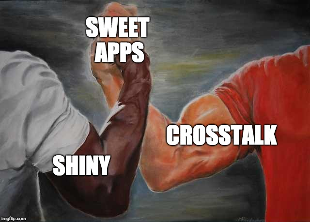

tl;dr
I presented slides at an R conference about {crosstalk}.
EARL 2018
I gave a talk called ‘Crosstalk: Shiny-like without Shiny’1 at the 2018 EARL conference in London.
The {crosstalk} package by Joe Cheng allows htmlwidgets—JavaScript visualisations wrapped in R code—to interact with each other. Filtering the data in widget causes all widgets to be filtered. This can be done inside an R Markdown document (including Flexdashboard) for easy server-less sharing in HTML format.
{crosstalk} in action
Below is a very simple example from the {crosstalk} documentation site. Click and drag to highlight points in the interactive plot ({d3scatter} package) and ‘brush’ the map markers (button in upper left) on the interactive map ({leaflet} package) and see how selections in each impact each other. Without {crosstalk}, selections in one of these widgets would not impact the others.
You can find a more advanced example of {crosstalk} in action using Gapminder data. It links HTML widgets from three packages – {leaflet}, {d3scatter} and {DT} – and includes a couple of sliders for filtering. All of this in less than 80 lines of code.
Remember all this is happening in the browser and without Shiny. And all you need to do is give each of your widgets a ‘shared data’ object. So instead of this:
data <- readRDS("data/some_data.RDS") # get data
datatable(data) # interactive table
leaflet(data) %>% addTiles() %>% addMarkers() # mapWe can just add one extra line to create the shared data object and pass that to our widgets instead:
data <- readRDS("data/some_data.RDS")
shared <- SharedData$new(data) # just add this line
datatable(shared) # now refer to the shared data object
leaflet(shared) %>% addTiles() %>% addMarkers()Slides
My task: I had to create a very simple app for our users to explore schools data. My problem: I didn’t have a server for hosting such an app. In other words, Shiny wasn’t really feasible in this case.
I’ve embedded the slides below. Click inside the frame and use the left and right arrow keys to navigate. Press P to see the presenter notes.
You can also view the slides in a dedicated browser tab.
On GitHub you can find code for the presentation, written with the {xaringan} package, and code for the dummy examples in it.
Memestravaganza
Since it’s 2018, the only way to publicise such a presentation is to exploit the power of memes and social media; the only method for communicating with millenials and younglings these days.
{kind=link}
But why stop at one meme? Why not a meme advent calendar counting down the week in advance of the conference?2 You can find them all (plus bonuses) in my earl18-presentation GitHub repo
I’ve reproduced them here with a bit more context.
Day one

Yeah, so I figured that Shiny was the only way to make interactive apps with R. But I had a problem: no server access for hosting the app. {crosstalk} is worth considering in this instance because you can share outputs as HTML files, which will open in the user’s browser.
Day two

R users can probably recognise an interactive app made with Shiny3. Probably a Flexdashboard is easy to recognise too; these are typically used for non-interactive dashboard displays, but {crosstalk} can be used to blur this line by making the elements interact with each other.
Day three

Self-explanatory, really. A small app can be made using {crosstalk} and shared freely. Try it!
Day four
It’s 2018. You’ve got to exploit Trump for personal gain at some point. One potential drawback of Shiny is the need to host the app on a server. Not ideal if you don’t have access to one. This is not a problem with {crosstalk}-enabled tools, which you can share as HTML files.
Bonus:

Day five

Yeah, so there’s a false equivalency here. {crosstalk} doesn’t necessarily help provide a direct replacement for Shiny. You still need Shiny to make ‘proper’ apps. But hey, the picture that the little girl has drawn still looks like a cat, right?

Since everything is rendered in-browser with {crosstalk}, you’re limited by your browser’s power. This means that the number of points on your interactive map, for example, is limited. In practice it’s maybe a couple of hundred. You can get around this by controlling point layers that can be switched on and off so fewer points are rendered at any one point But that’s a pain.
Day six

Let’s say you’ve read your data into the object data. Ordinarily you would do leaflet::leaflet(data), DT::datatable(data), etc, to create HTML widgets containing the data. To get the widgets to talk to each other with {crosstalk}, you make a shared data object: shared <- SharedData$new(data). Now you can do leaflet::leaflet(shared), DT::datatable(shared), etc, to get widget interactivity. Only one extra line of code is needed.
Day seven

You can use both frameworks to do cool stuff! Just consider the context and the limitations of {crosstalk} when you do this.
Also, turns out I punked you: my talk was called ‘Crosstalk: Shiny-like without Shiny’ but you can actually put Shiny in your {crosstalk}. Why? Your brushing and filtering with {crosstalk} can be used to generate Shiny outputs and vice versa. For simplicity, my talk focuses only on {crosstalk}
Environment
Session info
Last rendered: 2023-08-08 18:23:38 BSTR version 4.3.1 (2023-06-16)
Platform: aarch64-apple-darwin20 (64-bit)
Running under: macOS Ventura 13.2.1
Matrix products: default
BLAS: /Library/Frameworks/R.framework/Versions/4.3-arm64/Resources/lib/libRblas.0.dylib
LAPACK: /Library/Frameworks/R.framework/Versions/4.3-arm64/Resources/lib/libRlapack.dylib; LAPACK version 3.11.0
locale:
[1] en_US.UTF-8/en_US.UTF-8/en_US.UTF-8/C/en_US.UTF-8/en_US.UTF-8
time zone: Europe/London
tzcode source: internal
attached base packages:
[1] stats graphics grDevices utils datasets methods base
other attached packages:
[1] d3scatter_0.1.0 leaflet_2.1.2 crosstalk_1.2.0
loaded via a namespace (and not attached):
[1] cli_3.6.1 knitr_1.43.1 rlang_1.1.1
[4] xfun_0.39 promises_1.2.0.1 shiny_1.7.4.1
[7] jsonlite_1.8.7 xtable_1.8-4 htmltools_0.5.5
[10] httpuv_1.6.11 xaringanExtra_0.7.0 rmarkdown_2.23
[13] evaluate_0.21 ellipsis_0.3.2 fastmap_1.1.1
[16] yaml_2.3.7 lifecycle_1.0.3 compiler_4.3.1
[19] htmlwidgets_1.6.2 Rcpp_1.0.11 rstudioapi_0.15.0
[22] later_1.3.1 digest_0.6.33 R6_2.5.1
[25] magrittr_2.0.3 tools_4.3.1 lazyeval_0.2.2
[28] mime_0.12 Footnotes
Running joke: Shiny without Shiny? Sounds like a dull talk lol.↩︎
Answer: because you have better things to do.↩︎
Yeah, but have you seen The New Zealand tourism dashboard?↩︎
Reuse
CC BY-NC-SA 4.0